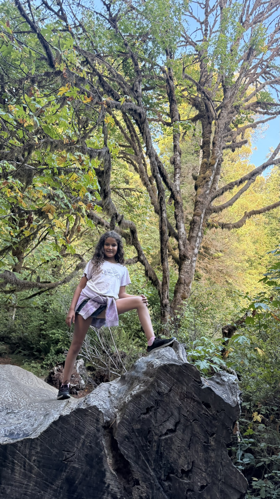
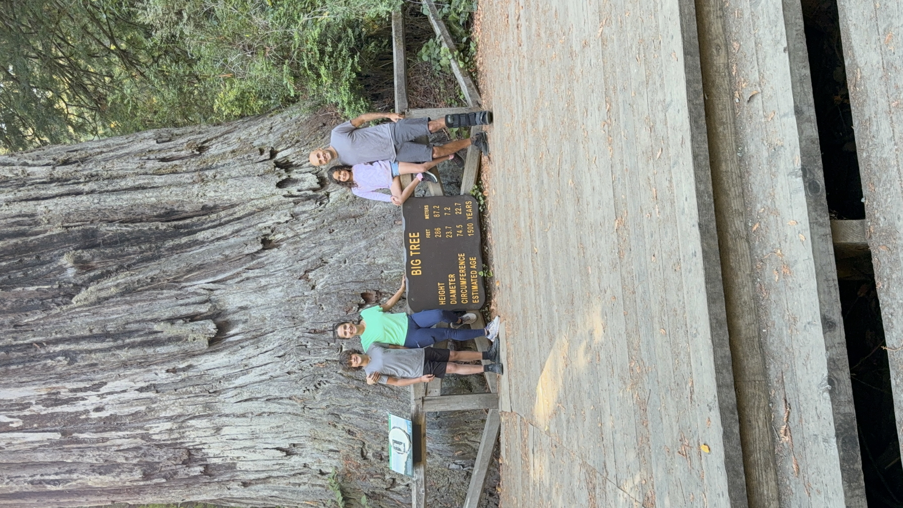
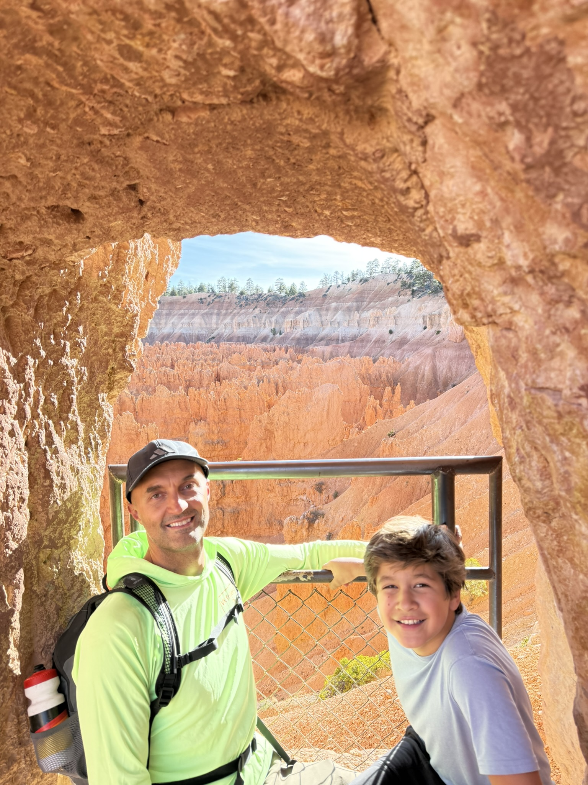
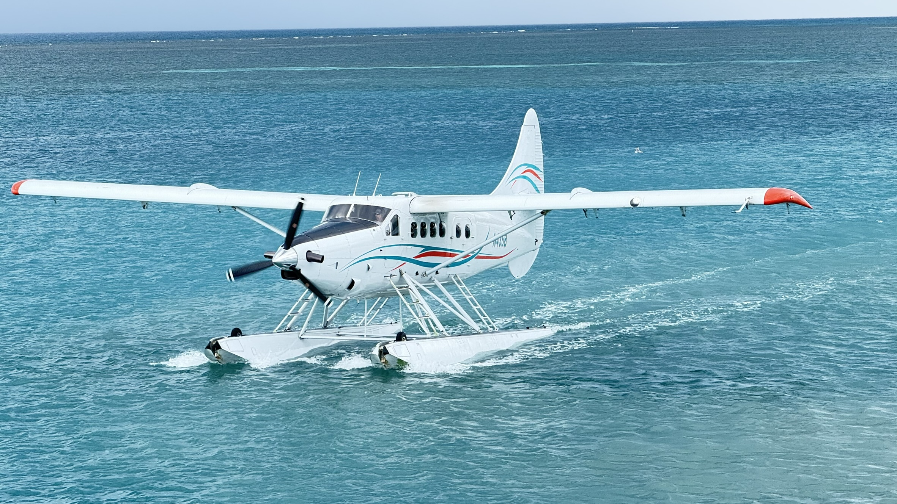

Family and kids wingfoil weekly meetup
Playa Central Launch Spot. Intro to Wingfoil, kids rides, and skills development, followed by a kids dance party at 6:30 PM with DJ EquisBoquis.
Family travel, places, and days outside
A living scrapbook of family routes, water time, wheels, hosted events, and photographs that make GoFamExplore.
Recorded travel tracks will appear across North America, alongside previews of geotagged travel photos.
Playa Central Launch Spot. Intro to Wingfoil, kids rides, and skills development, followed by a kids dance party at 6:30 PM with DJ EquisBoquis.
Only photos with embedded GPS metadata will become map markers. The four currently inventoried travel photos remain available for gallery review while metadata is being extracted.




The site is being rebuilt as a static, phone-friendly home for family travel, wingfoiling, mountain biking, hosted events, and the people and equipment behind those days.